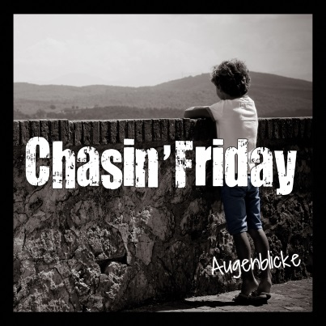

Unsere erste EP "Augenblicke" mit 5 Studio- und 1 Liveaufnahme wurde im Herbst 2014 veröffentlicht. Erhältlich ist sie auf allen Konzerten sowie auf Anfrage per Mail.

Foto: Verena Wiesmeier; Artwork: Tobias Plutka
Unser Dank geht an:
Kreismusikschule Fürstenfeldbruck
(Bereitstellung Probenraum, PA)
Christian Bystron
(Aufnahme, Mixing, Bereitstellung Herzwerkstudio, Ratschläge Songwriting)
Simon Starz
(Drums 2011 - 2013)
Und wenn man sich Montag schon auf Freitag freut?
Eben jene Jagd nach Freitag haben sich die vier Jungs von Chasin' Friday auf die Fahnen geschrieben. Inspiriert durch Bands wie Jupiter Jones oder Kettcar, erzählt
Chasin' Friday seit 2011 Geschichten aus dem Leben. Die in deutscher Sprache geschriebenen Texte handeln dabei von Liebe, Leiden, Träumen und Sehnsucht.
Der Himmel reißt auf: Mit dem ersten Album führt der Weg weiter nach vorne. Mehr Geschichten, mehr Träume und noch mehr Leben. Egal welcher Wochentag, die Jagd nach Freitag kann beginnen!!!
Vocals / Gitarre
Gitarre
Bass
Drums
{kind=link}
{kind=link}
{kind=link}
{kind=link}